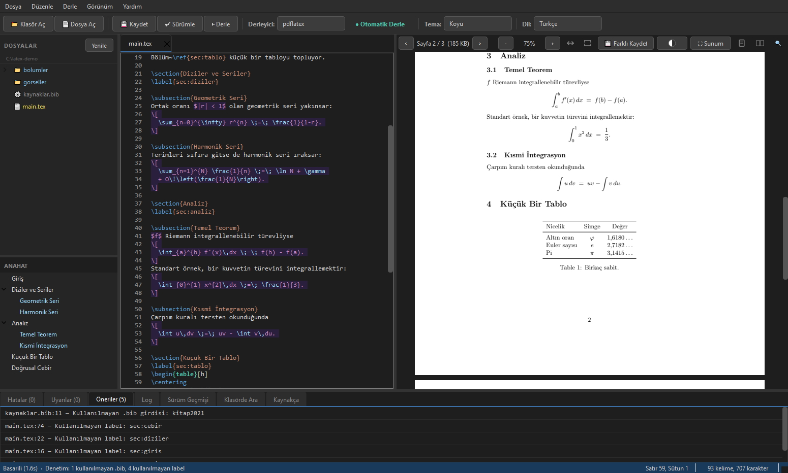
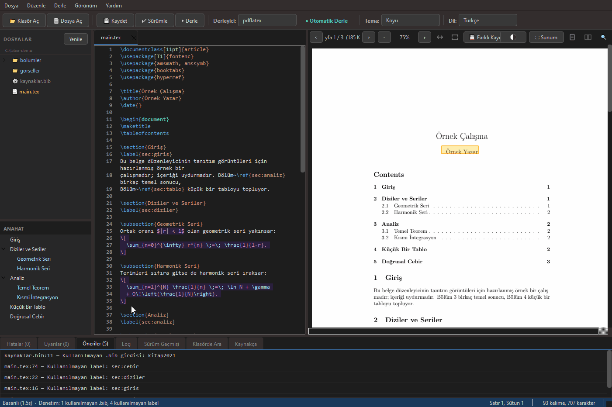

Turkish-character friendlyTürkçe karakter dostu
Handles ş, ğ, ı encoding issues that break compilation in IEEE/ASYU-style templates.IEEE/ASYU tarzı şablonlarda derlemeyi bozan ş, ğ, ı kodlama sorununu çözer.
Edit, compile, and preview in one desktop app, with SyncTeX, offline use, and Turkish-character support built in. Düzenle, derle ve önizle; tek masaüstü uygulamasında SyncTeX, offline kullanım ve Türkçe karakter desteği yerleşik.



Click a line in the editor and the PDF jumps to it, even across pages. Click the PDF and the editor jumps back to that exact source line. The Overleaf feature you like, but offline and on your desktop. Editörde bir satıra tıkla, PDF o konuma (sayfalar arası bile) zıplasın. PDF'e tıkla, editör tam o kaynak satıra geri dönsün. Overleaf'teki o sevdiğin özellik; ama offline ve masaüstünde.

LaTeX is the worldwide standard for academic papers, theses, and technical reports, delivering powerful, professional output. Yet most popular tools in this space are online and cloud-based, which creates real constraints for academics and students: a constant need for an internet connection, sensitive work sitting on someone else's servers, and lock-in through subscriptions or sign-ups. Akademik makale, tez ve teknik rapor yazımında dünya standardı olan LaTeX, güçlü ve profesyonel çıktılar sunuyor. Ancak bu alandaki yaygın araçların büyük bir bölümü çevrim içi ve bulut tabanlı çalışıyor; bu durum, sürekli internet bağlantısı gerektirmesi, gizlilik taşıyan çalışmaların yine sunucularda tutulması ve abonelik ya da kayıt modellerine bağımlılık gibi konularda akademisyen ve öğrenciler için kısıtlamalar doğuruyor.
LaTeX Editor is a fully open-source, independent desktop app: writing, compiling, and PDF preview all happen on your own computer, with no internet connection. There is no cloud service, user account, or online session to depend on; once installed, it runs entirely offline. That makes it a free alternative where connectivity is limited or where data privacy matters. Tamamen açık kaynaklı ve bağımsız bir masaüstü uygulaması olan LaTeX Editor, belgelerin yazılmasını, derlenmesini ve PDF olarak önizlenmesini internet bağlantısı olmadan, kullanıcının kendi bilgisayarında gerçekleştiriyor. Yazılımda herhangi bir bulut hizmetine, kullanıcı hesabına veya çevrim içi oturuma ihtiyaç yok; kurulduktan sonra tamamen çevrim dışı çalışıyor. Bu yönüyle internet erişiminin kısıtlı olduğu alanlarda ve veri gizliliğinin önemli olduğu çalışmalarda özgür bir alternatif sunuyor.
Handles ş, ğ, ı encoding issues that break compilation in IEEE/ASYU-style templates.IEEE/ASYU tarzı şablonlarda derlemeyi bozan ş, ğ, ı kodlama sorununu çözer.
Auto-fixes projects downloaded from Overleaf so they compile on your machine.Overleaf'ten indirilen projeleri otomatik düzeltir; yerelde derlenir.
Ctrl-click a source line → jump to the PDF. Ctrl-click the PDF → jump back. Even across pages.Kaynak satıra Ctrl-tıkla → PDF'e geç. PDF'e Ctrl-tıkla → geri dön. Sayfalar arası bile.
A desktop app, not a browser tab. Works without internet; no Overleaf compile limits.Tarayıcı sekmesi değil, masaüstü uygulaması. İnternetsiz çalışır; Overleaf derleme limiti yok.
Commands, comments, math, environments.Komutlar, yorumlar, matematik, ortamlar.
PDF in a side panel; save to compile.Yan panelde PDF; kaydet, derle.
Ctrl+S saves and compiles.Ctrl+S kaydeder ve derler.
lualatex (default), pdflatex and xelatex, auto-detected.lualatex (öntanımlı), pdflatex ve xelatex; otomatik algılanır.
Open a folder, file tree, multi-file tabs.Klasör aç, dosya ağacı, çoklu sekme.
Section tree in a side panel; click a heading to jump there.Yan panelde bölüm ağacı; başlığa tıkla, oraya atla.
Ctrl+F and Ctrl+H in the editor; Ctrl+P opens any project file by name.Editörde Ctrl+F ve Ctrl+H; Ctrl+P ile projedeki dosyayı adıyla aç.
Ctrl+Shift+F searches inside every .tex/.bib/.cls/.sty file in the folder, including the ones you have not opened. Click a result to jump to that line.Ctrl+Shift+F klasördeki tüm .tex/.bib/.cls/.sty dosyalarının içinde arar; açmadıklarınız dahil. Sonuca tıklayınca o satıra gidilir.
Errors and warnings in separate tabs.Hatalar ve uyarılar ayrı sekmelerde.
When a compile fails on a missing .sty or font, the app names the exact package to install and gives you the command.Derleme eksik bir .sty ya da font yüzünden düşerse uygulama kurulacak paketi adıyla söyler ve komutu verir.
One dialog shows whether WSL, the TeX engines, biber, pandoc and synctex are ready, with a fix command for whatever is missing.Tek ekranda WSL, TeX motorları, biber, pandoc ve synctex hazır mı gösterir; eksik olana kurulum komutu önerir.
Dark, Light, Solarized, Dracula, Monokai, Nord, Gruvbox.Koyu, Açık, Solarized, Dracula, Monokai, Nord, Gruvbox.
Turkish and English interface.Türkçe ve İngilizce arayüz.
Section/heading structure in a side panel.Bölüm/başlık yapısı yan panelde.
Ctrl+F text search with highlighting.Ctrl+F metin arama, vurgulu.
Drag to select, Ctrl+C to copy.Sürükle-seç, Ctrl+C ile kopyala.
Side-by-side pages.Yan yana sayfalar.
Ctrl+Space completes commands, \ref/\cite keys, and \input / \includegraphics paths.Ctrl+Space ile komut, \ref/\cite anahtarı ve \input / \includegraphics yollarını tamamlar.
Auto-indent and \begin/\end alignment.Otomatik girinti ve \begin/\end hizalama.
Live word and character count in the status bar.Durum çubuğunda canlı kelime/karakter sayısı.
Ctrl+V drops a clipboard image into media/ as a figure.Ctrl+V ile panodaki resmi media/'a figure olarak yapıştırır.
Compile errors flagged in the gutter; F4 jumps between them.Derleme hataları gutter'da işaretlenir; F4 ile dolaşılır.
Alt-click a \ref or \cite to jump to its label or bibliography entry.Bir \ref veya \cite'e Alt-tıkla; labelına veya kaynakça girdisine atla.
F2 on a \label or \cite key renames it everywhere it is used, across every file in the project.\label ya da \cite anahtarı üzerinde F2: projedeki tüm dosyalarda, kullanıldığı her yerde değişir.
Finds undefined \ref/\cite, unused .bib entries and labels; click a finding to jump. Optionally runs after each compile.Tanımsız \ref/\cite, kullanılmayan .bib girdisi ve label'ları bulur; bulguya tıkla, yerine atla. İsteğe bağlı olarak her derlemeden sonra da çalışır.
Click \cite/\ref links inside the PDF to jump to the target.PDF içinde \cite/\ref linklerine tıkla; hedefe atla.
F5 opens the PDF fullscreen for talks.F5 ile PDF'i sunum için tam ekran aç.
Invert the preview colours so the PDF matches a dark theme at night.Önizleme renklerini ters çevir; gece koyu temayla PDF de uyumlu olsun.
Convert to DOCX, Markdown or plain text via pandoc.Pandoc ile DOCX, Markdown veya düz metne çevir.
Detects external file changes and reloads safely.Dosyadaki dış değişiklikleri algılar, güvenle yeniden yükler.
Ctrl+K saves a named snapshot; view diffs, restore a file, or copy old content. No git knowledge needed.Ctrl+K ile adlandırılmış sürüm kaydet; farkları gör, dosyayı geri yükle, eski içeriği kopyala. Git bilgisi gerekmez.
Unsaved changes are snapshotted every 30 seconds. If the app is killed or the power goes out, you are offered them back on the next launch.Kaydedilmemiş değişiklikler 30 saniyede bir yedeklenir. Uygulama öldürülür ya da elektrik giderse bir sonraki açılışta geri yüklemen önerilir.
Ctrl+T builds tables from a cell grid, CSV or pasted LaTeX code; aligns existing tables.Ctrl+T ile hücre grid'inden, CSV'den veya yapıştırılan koddan tablo üret; mevcut tabloları hizalar.
Common LaTeX errors get plain-language explanations and fixes.Yaygın LaTeX hatalarına sade dilde açıklama ve çözüm eklenir.
% !TEX root compiles the root document from any chapter file.% !TEX root ile herhangi bir bölüm dosyasından kök belge derlenir.
Pick the palette that fits your eyes.Gözüne uygun paleti seç.
Portable .exe. Requires WSL + TeX Live for compilation.Taşınabilir .exe. Derleme için WSL + TeX Live gerekir.
.AppImage. Requires TeX Live for compilation..AppImage. Derleme için TeX Live gerekir.
⚠ The download includes the GUI only. The LaTeX compiler (lualatex/pdflatex/xelatex) is installed separately via TeX Live.⚠ İndirme yalnızca arayüzü içerir. LaTeX derleyicisi (lualatex/pdflatex/xelatex) TeX Live ile ayrıca kurulur.
The download is the GUI only: LaTeX compilation needs TeX Live. One-time setup:İndirme yalnızca arayüzü içerir: LaTeX derlemesi için TeX Live gerekir. Tek seferlik kurulum:
wsl --installwsl in PowerShell). On first launch, set a Linux username and password. Then update the package list and install TeX Live (large download, several GB):
Başlat menüsünden Ubuntu uygulamasını aç (PowerShell'de wsl yazarak da girebilirsin). İlk açılışta bir Linux kullanıcı adı/parolası belirle. Sonra paket listesini yenile ve TeX Live'ı kur (büyük indirme, birkaç GB):
sudo apt-get update
sudo apt-get install texlive-base texlive-binaries texlive-latex-base \
texlive-latex-extra texlive-latex-recommended texlive-lang-european texlive-luatex texlive-xetex \
texlive-fonts-extra texlive-science texlive-bibtex-extra texlive-font-utils \
texlive-extra-utils biber texlive-publishers texlive-humanities texlive-pstricks python3-pygments pandocsudo apt-get update
sudo apt-get install texlive-base texlive-binaries texlive-latex-base \
texlive-latex-extra texlive-latex-recommended texlive-lang-european texlive-luatex texlive-xetex \
texlive-fonts-extra texlive-science texlive-bibtex-extra texlive-font-utils \
texlive-extra-utils biber texlive-publishers texlive-humanities texlive-pstricks python3-pygments pandocchmod +x LaTeX_Editor_v*_Linux_x86_64.AppImageThen launch the app, open a folder containing your .tex file, and press Ctrl+S to compile.Sonra uygulamayı aç, .tex dosyanın bulunduğu klasörü aç ve derlemek için Ctrl+S'e bas.
The GUI is native, but LaTeX compilation runs through TeX Live in WSL for a consistent toolchain across Windows and Linux.Arayüz yerel; ama LaTeX derlemesi Windows ve Linux'ta tutarlı bir toolchain için WSL içindeki TeX Live üzerinden çalışır.
Yes, write on Overleaf for collaboration, then download and compile locally. The editor auto-fixes Overleaf-downloaded files.Evet, Overleaf'te yazın (iş birliği), sonra indirip yerelde derleyin. Editör Overleaf'ten indirilen dosyaları otomatik düzeltir.
Only the optional update check reaches the network. Editing and compiling are fully offline.Sadece isteğe bağlı güncelleme kontrolü internete bağlanır. Düzenleme ve derleme tamamen offline.
Lighter, with built-in SyncTeX, Turkish-character handling for IEEE/ASYU templates, and Overleaf-import fixing. It also tries to keep you out of the toolchain rabbit hole: a failed compile tells you which package to install, and the environment check reports what is missing on your machine with the command to fix it. Open source under GPL-3.0.Daha hafif; yerleşik SyncTeX, IEEE/ASYU şablonları için Türkçe karakter desteği ve Overleaf-içe-aktarma düzeltmesi ile. Ayrıca sizi toolchain çukurundan uzak tutmaya çalışır: düşen bir derleme hangi paketi kuracağınızı söyler, ortam denetimi makinenizde neyin eksik olduğunu kurulum komutuyla birlikte raporlar. GPL-3.0 altında açık kaynak.